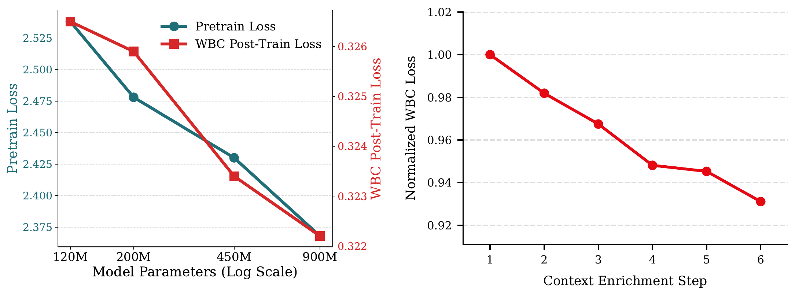

Netflix 首页由多行组成，每行是一个主题（比如“韩国电视剧”），行内横排若干部影片。原来的首页由多阶段推荐系统拼出来：先召回候选行和候选影片，再分别排序，最后组页。GenPage 用一个 decoder-only Transformer 直接生成整页：用户历史、账号属性和请求信息编码成 prompt，模型按从左到右、从上到下的顺序逐个生成行 token 和影片 token，每行、每部影片都只占一个 token。训练照搬大模型的流程，先在线上获得正反馈的首页上做下一 token 预测预训练，再用加权二分类（WBC）或强化学习做后训练。约 2 亿参数的 WBC 版本在 14 天 A/B 中把 Netflix 上线决策用的核心互动指标提升 0.24%，端到端延迟降低 20%；强化学习版本还没有上线。
1. 为什么要整页生成
多阶段系统里，召回、排序、组页各有各的模型和目标，特征工程也分散在各阶段。整页生成想解决三件事。第一，一个模型从原始输入直接出页面，要维护的模型少，各阶段目标不一致的问题也随之消失。第二，逐个生成的页面可以用强化学习按整页奖励优化，把行与行之间的相互影响算进去。比如“继续观看”行放在顶部时，用户多半直接续看已经开始的剧，不再往下浏览。论文把这种吸住注意力、让用户停止浏览的能力叫 stopping power。第三，模型质量可以靠加数据、加参数继续提高，不必反复改系统结构。
落到线上有四个约束：首页要实时生成，延迟是第一位的；片库每天都有新片，要处理冷启动；用户兴趣和热点在变，模型要保持新鲜；页面还要满足大量业务规则。
2. 数据怎么变成 token

每条训练样本对应一次首页曝光，包含三部分：上下文（用户历史、账号属性、请求信息）、页面（按版面顺序排列的行和影片）、反馈（播放、点赞、放弃等）。只有上下文和页面被 token 化作为模型的输入输出，反馈经过奖励系统转成监督信号。
团队没有用现成的文本分词器，而是为首页数据定制了 token。“用户 30 天前看了 50 分钟《女子监狱》”这件事，GPT-5 的分词器要 16 个 token，GenPage 只要 4 个：影片 ID、行为类型、行为时间分桶、观看时长分桶。一个影片、一行各对应一个 token，序列更短、推理更便宜，业务规则也能直接写成对某些 token 的屏蔽。行和影片的词表每天更新。
首页通常分几次请求、每次生成几行。每次翻页前，已经生成的行和用户在这些行上的最新行为会追加到 prompt 里，下一批推荐就能同时用上长期偏好和本次会话的行为。
3. 奖励与模型
奖励来自 Netflix 已有的奖励系统，它经过线上 A/B 调校，和用户的长期满意度对齐。系统给页面上每个曝光的影片一个标量奖励：一晚上刷完的剧奖励高，只看了 10 分钟的电影奖励低，曝光后用户放弃的影片得负奖励。整页奖励是所有曝光影片的奖励之和。
模型是标准 decoder-only Transformer，只有一处改动：输入 embedding 和输出投影不共享权重。预训练优化整个词表上的 softmax，WBC 后训练优化每个 token 各自的 sigmoid，两者需要的 logit 数值范围差别很大，拆开权重让模型能同时适应两种目标。线上 A/B 用的是约 2 亿参数的模型，为的是守住延迟预算。
4. 训练
4.1 预训练：模仿线上系统
预训练用线上获得正反馈的首页曝光，给定上下文和已生成的前几个页面 token，预测下一个页面 token。模型从零开始训，不从现成的大模型初始化。这一步让模型学会生成和线上系统相似的页面，但它只是模仿，不直接优化奖励大小；GenPage 上线后，如果反复用自己生成的页面再训练，模型还有退化的风险。
4.2 WBC 后训练：把生成变成逐 token 估值
WBC 让模型在给定上下文和已生成前缀时，估计生成每一个候选行或影片的价值。每个曝光影片的标签取奖励的正负（正向互动为 1，放弃为 0），权重取奖励的绝对值，行的奖励由行内影片奖励汇总得到。按论文的描述，损失写成：
是页面上一个曝光的行或影片， 是它的奖励， 是模型在该位置给这个 token 的 logit， 是 sigmoid。每个曝光目标之外，还随机抽一些 token 当负样本。很少被曝光的影片作为随机负样本被抽中的次数远多于作为正样本出现的次数，于是模型给冷门影片的估值天然偏低，这相当于一个热度先验，避免模型因为少量噪声样本把冷门影片排得很高。
生成时，模型在每一步对所有候选 token 算 logit，贪心选最大的那个，追加到前缀，再生成下一个。在线上排序模型的标准离线评估集上，WBC 模型在加权 AUC 等影片级指标上超过了线上排序模型。
4.3 强化学习后训练：按整页奖励优化
WBC 优化的是单个影片，强化学习优化整页。做法参照大模型的 RLHF：先训一个奖励模型，输入任意一页生成结果，预测这一页的整页奖励（监督目标是奖励系统给出的影片奖励之和），再用 Dr. GRPO（GRPO 的一个修正目标偏差的变体）优化生成策略，训练框架是 verl，推理引擎是 vLLM。策略、参考模型和奖励模型都从预训练 checkpoint 初始化。奖励模型的训练数据来自线上策略，只在和线上相似的页面上可靠，所以策略用 KL 惩罚约束在参考模型附近，防止策略生成那些奖励模型会误判为高分的页面。另有规则奖励，比如页面必须是一行一行的结构，业务上关键的行不能排得太靠下。
5. 上线要解决的工程问题
冷启动有两个办法。一是把新片或直播等时效内容的元数据直接写进上下文 token。二是语义 embedding 融合：每部影片的输入 embedding 由 ID embedding 和基于简介、演员、字幕、类型、视频内容的内容 embedding 融合而成，新片即使交互很少也有可用的表示。
保持新鲜靠多节奏增量训练：隔一段时间在较长的历史窗口上完整做一遍预训练和后训练；两次之间每天从前一天的 checkpoint 继续后训练，数据是最近一天加一部分抽样的历史数据，既跟上新片和热点，又不忘掉旧知识。新行、新影片先用对应类型的兜底 token 初始化，训练时还随机把一小部分已知 token 换成兜底 token，让模型学会处理没见过的 token。
业务规则用约束解码保证：每一步按适用的规则算出可选 token 的掩码，乘到输出 logit 上，只允许合规的 token 被生成。比如要把“热门游戏”行固定在第 2 行，就在第 2 行的位置屏蔽其他所有行 token。规则因请求而异，所以掩码要按请求、按位置动态构造，团队为此改了推理引擎。
每行只自回归生成前几部影片，因为前几部最受注意、最能决定这一行给人的印象；剩下的位置在这个前缀条件下做一次前向，按 logit 取分数最高的合规影片，这叫混合行解码，用来减少解码步数。
6. 实验
6.1 预训练有没有用
这组实验要说明预训练能给 WBC 后训练提供更好的起点。做法是对比先预训练再做 WBC，和直接做 WBC。
| 指标 | 有预训练 | 无预训练 |
|---|---|---|
| Loss（加权 BCE） | 0.321 | 0.333 |
| Row AUC | 0.884 | 0.879 |
| Entity AUC | 0.920 | 0.910 |
Entity AUC 从 0.91 到 0.92 看起来很小，作者换了一种说法：不考虑样本加权时，随机抽一对曝光影片（一个正样本、一个负样本），模型排错的概率从 9% 降到 8%。在成熟的线上系统上，单个改动很少能带来这么大的提升。
6.2 加参数还是加上下文
这组实验要比较两种提升方式的收益：模型从约 1.2 亿参数扩到 9 亿参数，以及模型大小不变、逐步丰富 prompt 的内容和 token 化方式。

模型扩大约 7.5 倍，WBC 损失只降约 1.3%；丰富上下文累计降约 6.9%，好几次单独一项上下文改进的收益就超过整个参数扩大的收益。作者的判断是，当前阶段个性化质量先受限于模型能拿到的信息和表示方式，然后才受限于容量。两组实验的轴不同，上下文的每一步也是在不同数据快照上测相对上一步的改进再连乘出来的，只能做相对比较。
6.3 强化学习是不是在优化整页
这组实验要说明强化学习学到的是整页层面的策略，而不是逐个 token 贪心。奖励在训练中稳步上升，但这是用策略正在优化的同一个奖励模型算的，只能算验证。更有说服力的是多样性：用页面上影片两两之间的 embedding 距离衡量，它不在训练目标里，却也随训练上升。

6.4 线上 A/B
线上对照组是现有的多阶段首页推荐系统，实验组是约 2 亿参数的 WBC 模型。为了沿用资格审核等业务规则，GenPage 在现有系统给出的候选行和候选影片集合里解码。共 5 个实验组，区别在随机负样本的数量和训练时纳入哪些线上曝光。
| 结果 | 数值 |
|---|---|
| 核心互动指标（5 个实验组） | 均显著提升，p<0.001 |
| 最好的实验组 | +0.24%，95% 置信区间 [0.17%, 0.30%] |
| 端到端延迟 | -20% |
5 个配置的提升接近，说明收益不依赖某个特定的训练数据设置。作者称这是近几年最大的算法驱动提升之一。延迟下降是因为一个 Transformer 直接吃 token 化的原始输入，替换了多个排序阶段和大量特征计算，定制 token 和混合行解码又减少了解码步数，而且可用的优化还没有用完。
上线后还观察到两件事。一是会话内的最新行为会很快影响后续推荐，一两天后回落到长期偏好，说明模型确实在使用行为时间戳，原系统做到这一点要靠大量手工特征。二是曝光内容的构成发生了意料之外的变化，比如新片和老片、剧集和电影、高质量和低质量互动的比例都变了。作者推测这是因为 GenPage 的个性化更精准，暴露出从原系统继承来的奖励系统等组件和生成式范式还没对齐，后续会调这些组件。
7. 局限
作者列出的未完成部分有三项：强化学习后训练还没有上线；长上下文仍然靠手工设计的摘要；文本、多模态和推理能力还没有接入。强化学习还有两个开放问题：离线评估依赖策略正在优化的奖励模型，结论是循环的；WBC 完全按影片拆分、整页强化学习完全不拆，两者之间如何利用部分结构还没有答案。
另外，线上实验是在原系统给出的候选集合上解码，召回阶段并没有被替换，所以这次 A/B 验证的是排序和组页，不是完全端到端的生成。
8. 实践意义
- 如果你在做生成式推荐，可以先检查 token 化方式：一个物品、一个版面单元对应一个 token，序列短，业务规则也能直接写成 logit 掩码，不需要在多 token 的文本词表上维护复杂的约束。
- 在加大模型之前先丰富上下文。Netflix 的数据里，上下文改进累计带来的损失下降约为 7.5 倍参数扩大的 5 倍。